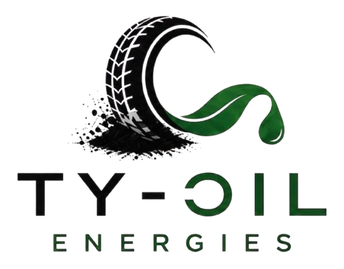
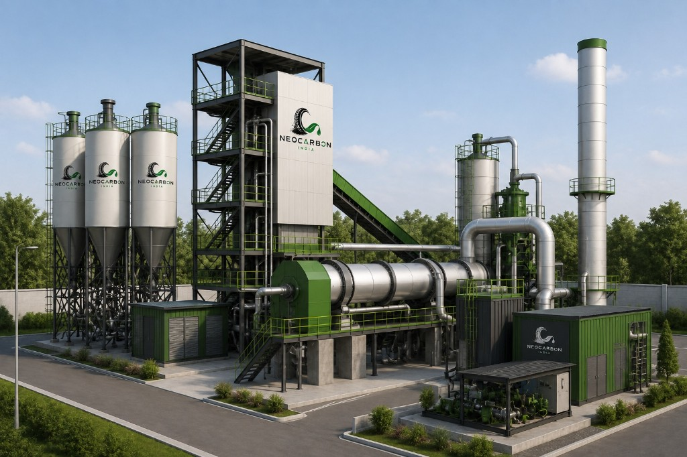

NeoBlack
Recovered carbon black of consistent grade and particle size.

Recovering what matters
TY Oil Energies recovers carbon black, pyrolysis oil and steel from end-of-life tyres across India.

Every end-of-life tyre entering our line is separated into materials that industry can use directly. Steel is removed first, during preparation. The prepared rubber then passes into sealed, oxygen-free thermal conversion, which yields a hydrocarbon oil and a solid carbon char. The oil is condensed and refined into a stable process feedstock. The char is milled and classified into recovered carbon black suitable for substitution against several virgin grades.
Recovered carbon black of consistent grade and particle size.
Stable recovered tyre pyrolysis oil for process and refining use.
High-tensile reclaimed steel wire, cleaned and baled for reuse.
Pyrolysis performs only as well as the material entering it. The majority of our process control therefore sits upstream of the reactor, in grading, sizing, wire separation and drying, so that every charge presents the same characteristics and the output stays inside the same band batch after batch.
Conversion takes place under seal with oxygen excluded and heat applied indirectly, so the rubber decomposes thermally rather than combusting. Vapour is drawn off through a staged condenser train and settled into oil by grade. Solid char is cooled, scalped for residual wire, then milled and classified into finished carbon. Non-condensable gas is captured and returned to the burners as fuel.
Loads are weighed, sampled and graded, with rims, tubes and contamination removed before acceptance.
Casings are reduced to uniform chip, with steel extracted magnetically and textile removed by air classification.
Prepared chip is charged under seal into an indirectly heated reactor operating without oxygen.
Vapour is condensed into oil, char is milled into carbon black, and process gas is captured for reuse.
Finished material is classified, packed and released against a batch record.
India generates significantly more end-of-life tyres each year than the country has licensed capacity to process, and the shortfall continues to widen. The default outcomes, stockpiling and open burning, destroy recoverable material and release avoidable emissions in the process.
Recovery changes the arithmetic on both sides. Each tonne of recovered carbon black displaces a tonne that would otherwise have been manufactured from fossil oil, and each tyre processed is one removed from an unmanaged waste stream. For manufacturers, substitution is a direct route to lower embedded carbon in the finished product without redesigning it.
Containment is what makes that case hold. Material handling is enclosed with extraction at source, the reactor operates under seal, and process gas is cleaned and burned back into the plant rather than flared, supplying the majority of its thermal load. Emissions pass through multi-stage treatment before release, and operating conditions are logged continuously through every cycle.
Consistency is the condition of entry for any recovered material. Our products are sampled at discharge and tested using the same recognised methods our customers apply to virgin material, so results can be read directly against an incumbent supplier's certificate. Retained samples are held against every batch number, and third party verification is available on request.
TY Oil Energies takes end-of-life tyres apart under controlled conditions and returns every recoverable fraction to industrial use. That is the whole business, and the plant is engineered around it rather than adapted to it.
We contract at both ends of the loop. Collectors, fleet operators, retreaders and municipal contractors require a documented route for the casings they hold. Manufacturers require carbon black, process oil and steel, and increasingly prefer recovered material where specification allows. We also support partners developing recovery capacity in their own regions.
Plot no. 482, Rasal Ganj
Aligarh, UP 202001
C-4, 132, Sector 31
Noida 201301